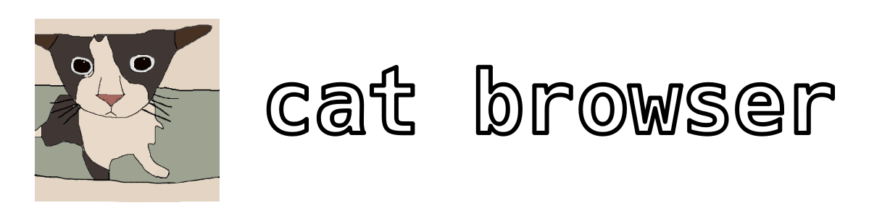

very cool lightweight browser made for people that love cats!!!
built with qt6 web engine and python very cool wow
no data collecting or telemetry unlike other browsers
1. download and extract the zip file
2. run the cmd file as administrator
install an aur helper, then run:
aur-helper -S cat-browser-git
what are you looking at go downlad it already